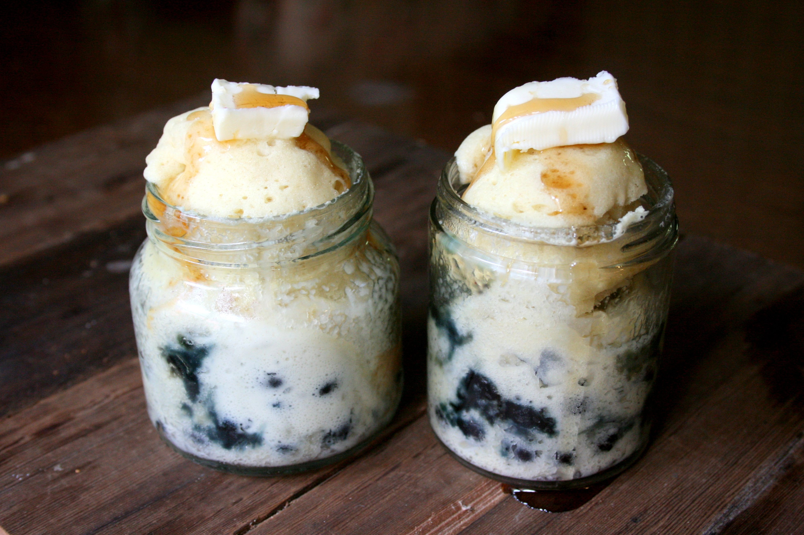

Pancake in a Mug

Ingredients
- 1 cup flour
- 1 tb baking powder
- 2 tb organic sugar
- 2 tb vegan margarine, melted (or sub. real butter)
- 3/4 cup nut milk (or sub. dairy milk)
Steps
- combine dry ingredients
- add wet ingredients
- mix
- microwave for 60-90 seconds, until risen
- enjoy =3